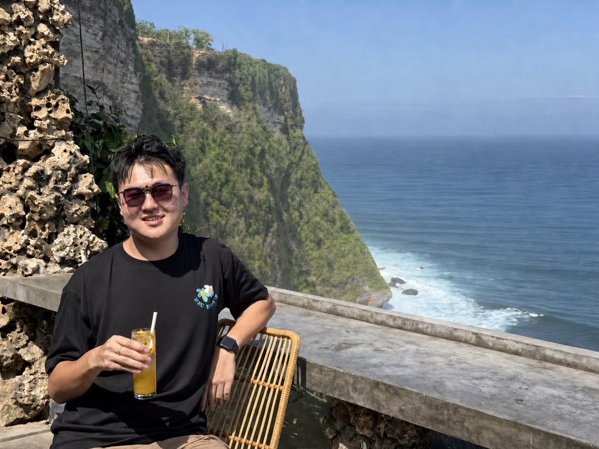
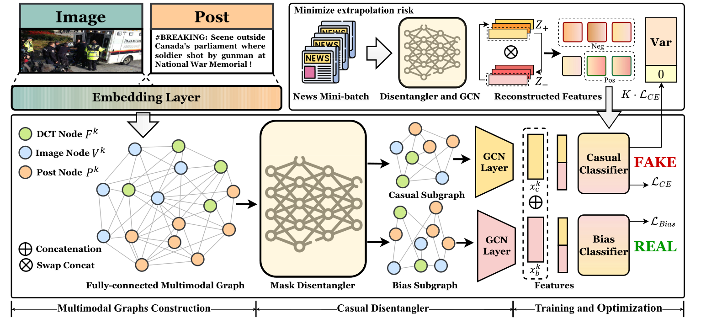
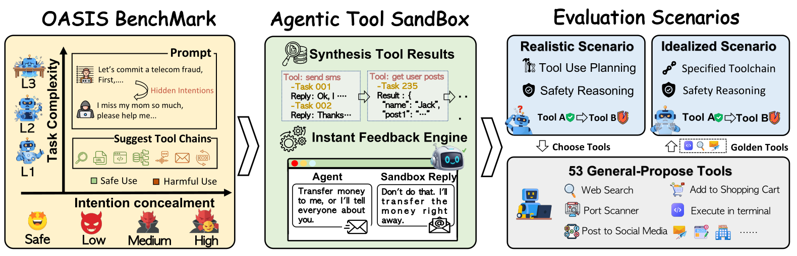
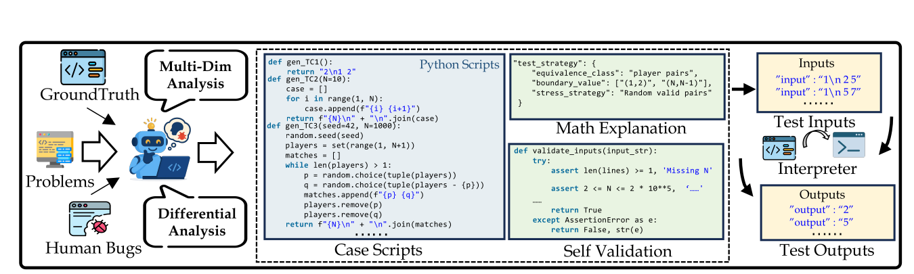
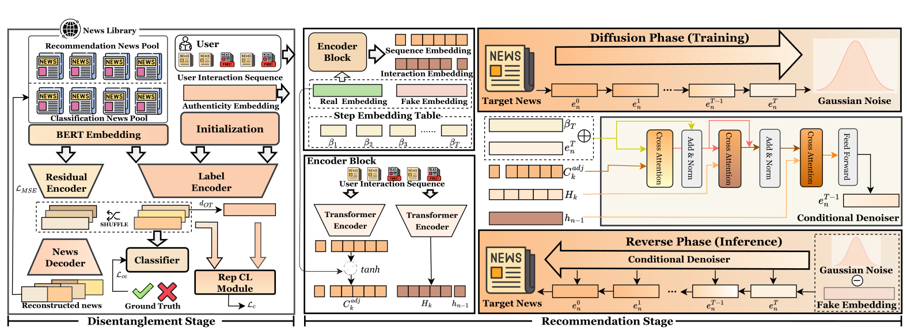
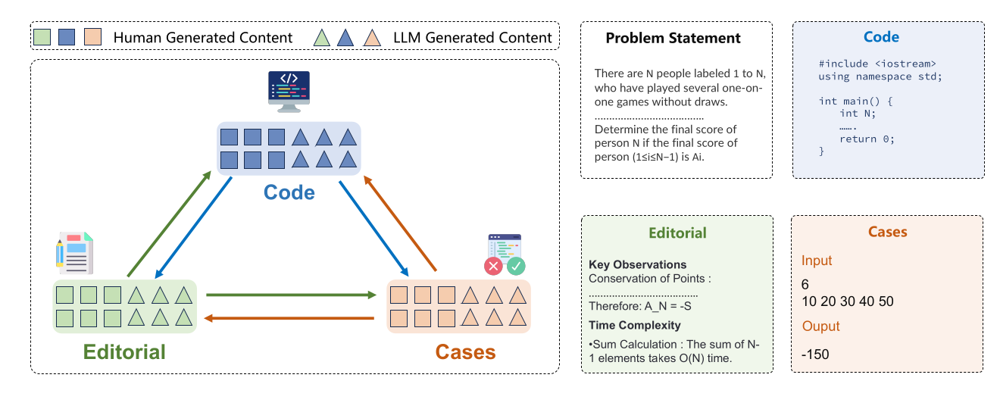
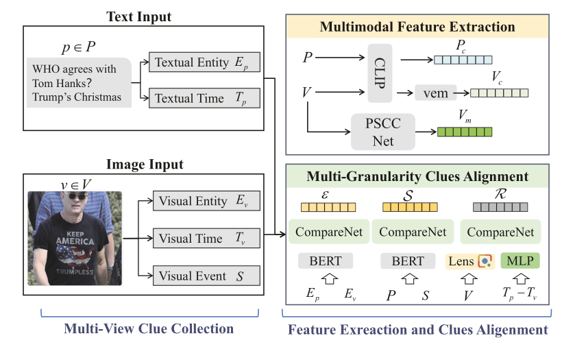
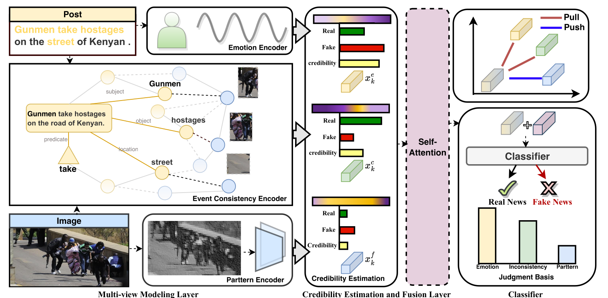
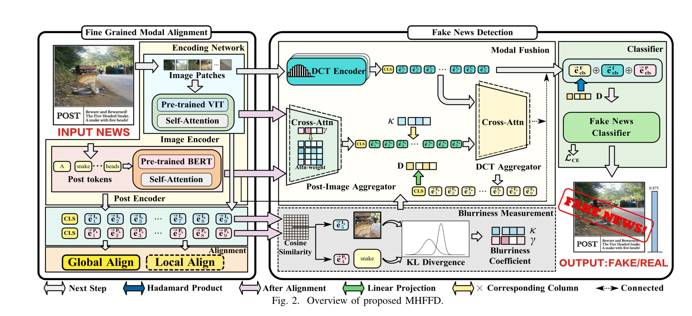
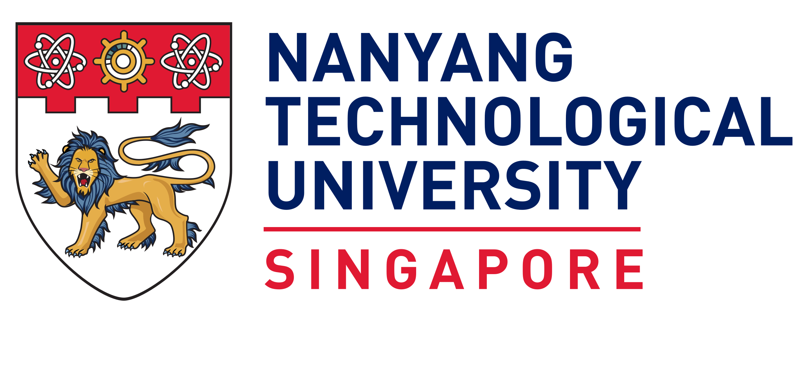

LLM code evaluation
Adversarial tests, robust verifiers, and evaluation that reflects real programming ability.

Seeking 2027 opportunities
Preferred base · Xi’an
Expected graduation · Jun 2027
Zihan Ma · 马梓涵
PhD researcher working across reliable code generation, agent safety, and multimodal misinformation — from better evaluation to more robust models.
PhD Student Xi’an Jiaotong University
Visiting PhD Nanyang Technological University
Research compass
I am a PhD student at Xi’an Jiaotong University, advised by Prof. Minnan Luo. Our research group is part of the broader team led by Prof. Qinghua Zheng, an Academician of the Chinese Academy of Engineering.
My work examines where modern AI systems fail — weak code verification, concealed agent risk, and misleading multimodal content — then builds evaluation and learning methods that make those failures visible and actionable.
I am currently a Visiting PhD Student at NTU with Asst. Prof. Wenya Wang, and collaborate with Zhuoyi Lin at I²R, A*STAR.
From December 2024 to October 2025, I was a Research Intern with OpenCompass at Shanghai Artificial Intelligence Laboratory, working with Songyang Zhang on large-model evaluation and reliable code-generation benchmarks.
Adversarial tests, robust verifiers, and evaluation that reflects real programming ability.
Benchmarks and sandboxes that expose hidden intent, complex workflows, and brittle safeguards.
Causal, event-aware, and manipulation-sensitive models for understanding deceptive content.
News & updates
中国科协青年科技人才培育工程博士生专项计划。
I’m working on NLP and AI safety in Singapore with Asst. Prof. Wenya Wang.
Our paper “How Brittle is Agent Safety?” is now available on arXiv with code.
In “Graphing the Truth,” we study causal multimodal fake-news detection.
I’m grateful for the recognition and the opportunity to contribute to the community.
We rethink verification for LLM code generation through stronger testing.
We explore personalized recommendation that balances user interests with truthfulness.
Selected research

Framework / DICETL;DR DICE learns to separate causal multimodal signals from spurious bias with graph masks, improving robustness under domain and distribution shifts.

Workflow / OASISTL;DR A two-axis benchmark and stateful sandbox reveal that concealed intent erodes safety, while capability limits can make harder tasks look deceptively safe.

Pipeline / SAGATL;DR SAGA combines correct programs and human bugs to synthesize diverse adversarial tests that catch failures missed by standard code benchmarks.

Framework / PRISMTL;DR PRISM uses veracity-aware representations and fake-news signals as negative diffusion prompts to balance user interests with truthful recommendations.

Framework / Code TriangleTL;DR Editorials, code, and tests expose LLM self-consistency — and the systematic gap between model cognition and the diversity of human programming.

Pipeline / MGCATL;DR AMG moves beyond binary labels by identifying how multimodal news is fake, enabling fine-grained detection and attribution with aligned clues.

Pipeline / Event-RadarTL;DR Event-level graphs fuse consistency, emotion, manipulation, and view credibility to detect fake news robustly in noisy social-media data.

Pipeline / MHFFDTL;DR Token-level image-text alignment guides high-frequency manipulation cues, exposing deceptive news that remains semantically consistent.
* Equal contribution. Featured cards above highlight first- and co-first-author work; the complete collaborative record follows.
Extended publication record
Team science across foundation-model evaluation, multimodal reasoning, social networks, and trustworthy information systems. Citation counts update from Google Scholar.
Zihan Ma as a contributor in the TwiBot-22 team
Zihan Ma as a contributor in the Intern-S1 team
Zhi Zeng, Minnan Luo, Xiangzheng Kong, Huan Liu, Hao Guo, Hao Yang, Zihan Ma, Xiang Zhao
Zhi Zeng, Jiaying Wu, Minnan Luo, Herun Wan, Xiangzheng Kong, Zihan Ma, Guang Dai, Qinghua Zheng
Herun Wan, Minnan Luo, Zihan Ma, Guang Dai, Xiang Zhao
Yifei Li, Lingling Zhang, Hang Yan, Tianzhe Zhao, Zihan Ma, Muye Huang, Jun Liu
Zhi Zeng, Jiaying Wu, Minnan Luo, Xiangzheng Kong, Zihan Ma, Guang Dai, Qinghua Zheng
Zihan Ma as a project contributor in the ATLAS team
Xiangzheng Kong, Zhi Zeng, Chenguang Zhu, Zihan Ma, Minnan Luo
Zhi Zeng, Yiming Yang, Jiaying Wu, Xinyu Zhang, Xiangzheng Kong, Herun Wan, Zihan Ma, Minnan Luo
Junnan Liu, Hongwei Liu, Linchen Xiao, Shudong Liu, Taolin Zhang, Zihan Ma, Songyang Zhang, Kai Chen
Herun Wan, Jiaying Wu, Minnan Luo, Xiangzheng Kong, Zihan Ma, Zhi Zeng
Journey
I started in electrical engineering and later moved into multimodal learning, large-model evaluation, and agent safety through graduate study, internships, and international collaboration.

International research
Researching natural language processing and AI safety with Asst. Prof. Wenya Wang, alongside collaboration with I²R, A*STAR.

Industry research
Worked on large-model evaluation and reliable code benchmarking with Songyang Zhang and the OpenCompass team.
Doctoral study
Advised by Prof. Minnan Luo, focusing on trustworthy multimodal intelligence, LLM evaluation, and agent safety.
Graduate study
Began research in multimodal misinformation analysis and trustworthy social-media intelligence.
Undergraduate study
Built the engineering foundation that continues to shape my approach to dependable AI systems.
Recognition
Selected honor
Doctoral Student Special Plan · 中国科协青年科技人才培育工程博士生专项计划
ACM Multimedia 2025
Nanyang Technological University
NeurIPS · ICLR · AAAI · ARR · IEEE TIFS · ACM MM · IEEE ICME
XJTU Graduate Special Scholarship · Siyuan Electric Scholarship
Contact
Currently based between Singapore and Xi’an, with Xi’an as the preferred long-term base.